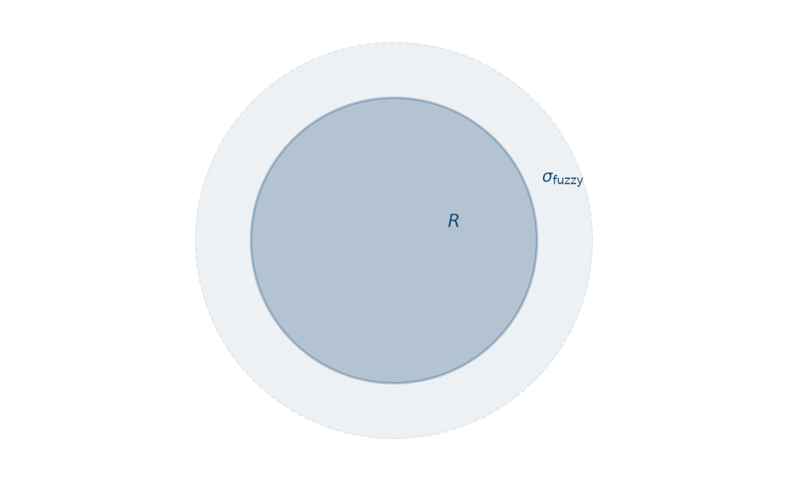
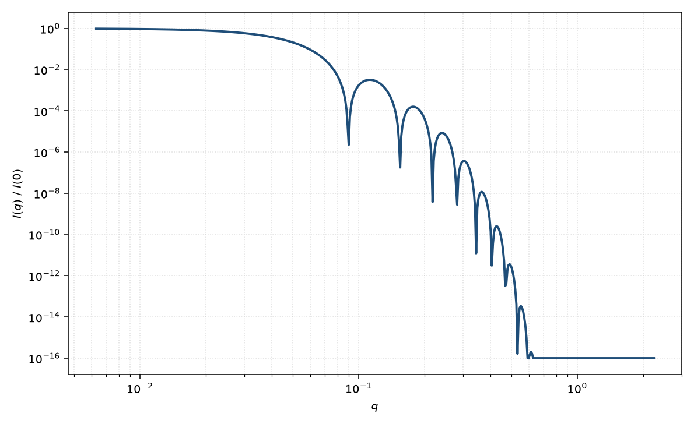

模糊球
fuzzy sphere
适用场景
模糊球把均匀球的尖锐界面换成径向密度渐变的“绒毛”表面。经典对象是温敏微凝胶：交联密度由核向外降低，溶胀态外壳高度水化（Stieger 等，2004）。也适用于表面接枝聚合物刷、凝胶颗粒以及任何“电镜看像球、但 Porod 尾明显软于 $q^{-4}$”的胶体。
塌缩态微凝胶可接近均匀硬球；溶胀态必须引入模糊宽度 $\sigma$，否则高 $q$ 拟合会系统偏离并虚报多分散。
物理图像
实空间剖面常取误差函数或高斯卷积的球：$\rho(r)\propto \tfrac{1}{2}\mathrm{erfc}[(r-R)/(\sqrt{2}\sigma)]$。本页约定形式因子（强度）乘以高斯界面因子 $\mathrm{e}^{-q^2\sigma^2}$，等价于振幅乘 $\mathrm{e}^{-q^2\sigma^2/2}$。模糊主要抑制高 $q$ 振荡并加快衰减，低 $q$ 的 $R_g$ 仍由整体尺寸主导。
示意图


核心公式
出发点
均匀核加高斯模糊界面，等价于硬球密度与三维高斯的卷积。稀释振幅仍从傅里叶变换出发
$$F(\mathbf{q})=\int \Delta\rho(\mathbf{r})\,\mathrm{e}^{i\mathbf{q}\cdot\mathbf{r}}\,\mathrm{d}^3r.$$卷积定理：$\Delta\rho=\Delta\rho_{\mathrm{sphere}}\ast g$ 则 $F(q)=F_{\mathrm{sphere}}(q)\,g(q)$。取 $g(\mathbf{r})\propto\mathrm{e}^{-r^2/(2\sigma^2)}$，其傅里叶变换 $g(q)=\mathrm{e}^{-q^2\sigma^2/2}$。
推导
硬球部分与均匀球相同：令 $x=qR$，分部积分得到 $F_{\mathrm{sphere}}=\Delta\rho V\Phi(x)$，$V=4\pi R^3/3$，$\Phi(x)=3(\sin x-x\cos x)/x^3$。乘上高斯因子
$$F(q)=\Delta\rho V\,\Phi(qR)\,\mathrm{e}^{-q^2\sigma^2/2}.$$归一化强度 $P(q)=|F/F(0)|^2$。因 $F(0)=\Delta\rho V$，指数在模方后变为 $\mathrm{e}^{-q^2\sigma^2}$（这是强度而非振幅上的约定）：
$$P(q)=\left[\frac{3(\sin x-x\cos x)}{x^3}\right]^2 \mathrm{e}^{-q^2\sigma^2},\qquad x=qR.$$完整微凝胶模型还可叠加链涨落的 Lorentz 项以描述网络内部相关，本页只保留几何模糊核。稀释 $I(q)=n(\Delta\rho)^2 V^2 P(q)+B$。
低 $q$ 与极限
$\Phi=1-x^2/10+O(x^4)$，再乘 $\mathrm{e}^{-q^2\sigma^2}=1-q^2\sigma^2+O(q^4)$，得 $P=1-q^2(R^2/5+\sigma^2)+O(q^4)$。与 Guinier $P=1-q^2 R_g^2/3+\cdots$ 比较
$$R_g^2=\frac{3}{5}R^2+3\sigma^2.$$$\sigma\to 0$ 回到均匀球 $R_g=R\sqrt{3/5}$。$\Phi(x)=0$ 仍在 $\tan x=x$ 的根上（第一正根 $x_1\approx 4.49$），故单分散时极小位置仍约 $q_1\approx 4.49/R$，但深度被高斯包络压低。
大 $x$ 时硬球包络 $\sim q^{-4}$，再乘 $\mathrm{e}^{-q^2\sigma^2}$，高 $q$ 衰减快于 Porod。这是模糊界面相对尖锐界面的指纹。
参数表
| 参数 | 符号 | 含义 | 单位 | 典型范围 |
|---|---|---|---|---|
| 半径 | $R$ | 密度剖面半高处的有效半径 | Å 或 nm | 50–5000 Å |
| 模糊宽度 | $\sigma$ | 径向界面高斯宽度 | Å | 0.05$R$–0.3$R$（溶胀态可更大） |
| 标度 / 本底 | $\mathrm{scale},B$ | 前置因子与常数本底 | 与强度单位一致 | 实验相关 |
拟合注意
$\sigma$ 与 Schulz 多分散都能抹平振荡：前者主要改高 $q$ 包络，后者改极小深度并轻度移动表观半径。应先看电镜/水力学半径是否窄分布，再决定把宽度放在 $\sigma$ 还是尺寸分布上。
取向无关。若颗粒带磁性填料，磁 SLD 剖面一般比核密度更锐或更钝（磁死层），需独立的磁模糊宽度，不能套用核 $\sigma$。
相近模型
- 均匀球 — $\sigma\to 0$ 的硬界面极限。
参考文献
- Stieger, M.; Richtering, W.; Pedersen, J. S.; Lindner, P. Small-angle neutron scattering study of structural changes in temperature sensitive microgel colloids. J. Chem. Phys. 2004, 120, 6197–6206. DOI: 10.1063/1.1665752